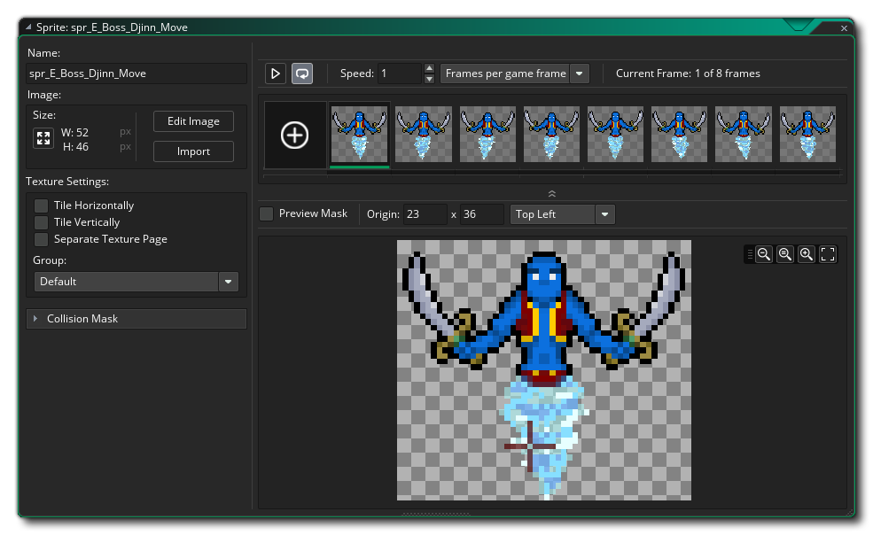
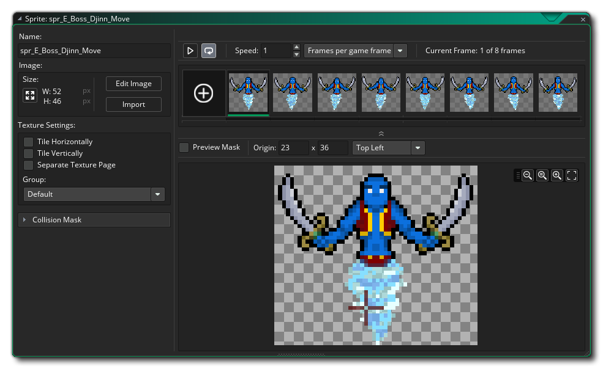

Comenzaremos esta sección de la Guía de inicio rápido mirando los sprites, que generalmente son una de las primeras cosas que necesitará al hacer cualquier proyecto en GameMaker Studio 2. Como se explicó en la sección sobre Recursos, un sprite es una imagen que puede ser animada (aunque no tiene que ser así) y luego dibujada en la pantalla. En general, un sprite se asociará con un objeto, pero puede dibujar sprites por su cuenta, ya sea desde el código o en la capa de contenido del editor de sala (más sobre esto más adelante). También puedes crear un sprite para usarlo como un conjunto de mosaicos, pero también exploraremos esa opción más adelante.
Cuando crea un nuevo proyecto desde la página de inicio, su árbol de recursos solo contendrá carpetas vacías para los recursos que pueda necesitar, por lo que debe hacer clic derecho  en la carpeta de recursos de sprite y luego selecciona la opción Crear. Esto creará un nuevo sprite y abrirá el editor de sprites por ti (si el editor de sprites no se abre, simplemente haz doble clic)
en la carpeta de recursos de sprite y luego selecciona la opción Crear. Esto creará un nuevo sprite y abrirá el editor de sprites por ti (si el editor de sprites no se abre, simplemente haz doble clic)  en el nuevo recurso): 
en el nuevo recurso): 
Como probablemente pueda ver, la parte superior izquierda de la ventana tiene un campo para el "Nombre" del sprite. Todos los sprites (y todos los demás recursos) deben tener un nombre dado para que usted (y GameMaker Studio 2 ) puedan identificarlos fácilmente, aunque debe tener en cuenta que este nombre es realmente una variable que contiene un valor de ID que "apunta" al recurso, en este caso un sprite. Lo mejor es darle a cada sprite un nombre descriptivo para que pueda identificar de un vistazo si un recurso en particular es un sprite o un objeto o cualquier otra cosa, y muchas personas lo hacen prefijando o sufijando el recurso con las letras " spr " - para ejemplo, "spr_Ball". Tenga en cuenta que los nombres de los recursos están limitados a usar solo letras, dígitos y el símbolo de guión bajo "_" en el nombre de un sprite (y cualquier otro recurso), todos los recursos deben comenzar con una letra, no un número.
Las otras características del editor de sprites las discutiremos al final de esta sección, pero primero debemos explicar cómo dibujar un sprite. Esto se hace en el Editor de Imagen. El editor de imágenes es una herramienta muy poderosa para crear los gráficos en su juego y se abre al hacer clic en el botón Editar imagen.  No vamos a entrar en demasiada profundidad sobre las herramientas disponibles aquí, para eso tenemos la sección Editor de imágenes del manual, pero brevemente usted tiene:
No vamos a entrar en demasiada profundidad sobre las herramientas disponibles aquí, para eso tenemos la sección Editor de imágenes del manual, pero brevemente usted tiene:
- En la esquina superior izquierda, la vista de marco: muestra los marcos de tu sprite y puede redimensionarse con los iconos de la lupa.
- En el centro tenemos el lienzo de dibujo: muestra el marco actualmente seleccionado listo para dibujar y puede usar el botón central del mouse
para desplazarse y la rueda del mouse
- En la esquina superior derecha tenemos los pinceles básicos: aquí puedes elegir el pincel para dibujar, y también se agregarán pinceles personalizados aquí.
- En el medio derecho tenemos el selector de color: aquí podemos elegir el color que se usará para el botón izquierdo y / o derecho del mouse, ya que puede dibujar en el lienzo con uno u otro botón al mismo tiempo
- Justo debajo del selector de color tenemos nuestras herramientas: estas son las diferentes herramientas de dibujo, incluidas las herramientas de pincel, relleno de inundación, máscara y forma. Tenga en cuenta que algunas de las herramientas se dividen diagonalmente y dibujarán formas contorneadas o rellenas según el lado de la línea donde haga clic para seleccionarlas.
- En la parte inferior derecha tenemos la vista de capas, como muchas otras herramientas de dibujo, puede crear diferentes capas para dibujar, lo que le permite experimentar con la posición y el color, etc... sin tener que preocuparse por destruir lo que está debajo
Dibuje algo en el editor de imágenes y tómese un tiempo para jugar con las opciones, luego, cuando esté listo, cierre el área de trabajo (que guardará la imagen) para llevarlo nuevamente al espacio de trabajo con el editor de sprites. Analizaremos algunas otras características del editor de sprites que es importante conocer cuando recién comienza...
Lo primero que debes saber es cómo establecer el origen para el sprite. El origen es simplemente el punto que se utilizará para "anclar" nuestro sprite dentro de la sala, y en este caso queremos establecerlo en el centro. Entonces hacemos clic  en el menú de abajo para establecer el origen y seleccionar "centro medio":
en el menú de abajo para establecer el origen y seleccionar "centro medio":  Verás que el origen de la cruz en la imagen de vista previa se mueve al centro del sprite. Tenga en cuenta que puede colocar el origen donde desee simplemente haciendo clic
Verás que el origen de la cruz en la imagen de vista previa se mueve al centro del sprite. Tenga en cuenta que puede colocar el origen donde desee simplemente haciendo clic  en la imagen de vista previa, y también puede ingresar manualmente la posición de origen agregando valores a los campos x / y en la parte superior.
en la imagen de vista previa, y también puede ingresar manualmente la posición de origen agregando valores a los campos x / y en la parte superior.
Otra cosa importante que debes saber es cómo configurar la máscara de colisión para el sprite. La máscara de colisión es el área que GameMaker Studio 2 verificará para ver si ha habido una colisión, y de manera predeterminada está configurada en rectángulo (que también es la más rápida de resolver). Tenga en cuenta que puede establecer que el modo de detección para el cuadro delimitador sea automático (el valor predeterminado) o manual. Si elige el manual, podrá establecer los valores del cuadro delimitador a la izquierda, derecha, arriba y abajo. 
Cualquier tipo de máscara de colisión que no sea un rectángulo será más lenta de resolver, pero cuando se trata de un juego pequeño y simple, generalmente no es un problema. Puede cerrar el editor de sprites ahora, ya que vamos a avanzar para hablar sobre los conjuntos de mosaicos.